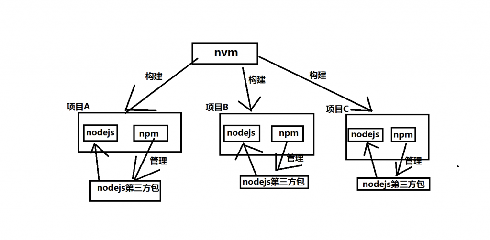

前言
- 使用 Homebrew 安裝 nvm
- 使用 nvm 安裝 Node.js
- 使用 nvm 無痛切換 Node.js 版本
Homebrew
Homebrew 是 OS X 上強大的包管理器，為系統軟件提供了非常方便的安裝方式，獨特式的解決了包的依賴問題，並不再需要 sudo，一鍵式編譯，無參數困擾。
安裝
1 | /usr/bin/ruby -e "$(curl -fsSL https://raw.githubusercontent.com/Homebrew/install/master/install)" |
卸載
1 | /usr/bin/ruby -e "$(curl -fsSL https://raw.githubusercontent.com/Homebrew/install/master/uninstall)" |
補充語法
- brew install git ## 安裝軟件
- brew uninstall git ## 卸載軟件
- brew search git ## 搜索軟件
- brew upgrade git ## 更新軟件
- brew cleanup git ## 刪除軟件
- brew outdated ## 查看哪些軟件需要更新
- brew upgrade ## 更新所有軟件，把所有的 Formula 目錄更新，並且會對本機已經安裝並有更新的軟件用 * 標明
- brew list ## 顯示已經安裝的軟件列表
Homebrew 的安裝路徑及文件夾
Homebrew 將本地的 /user/local 初始化為 git 的工作樹，並將目錄所有變更為當前所操作的用戶，以後的操作將不需要 sudo

nvm
Node.js 版本管理工具，管理 Node.js 版本和 npm 版本
安裝
1 | brew install nvm |
安裝完後，為了讓你可以直接在 shell 使用 nvm 指令，必須在你的 .bash_profile 加入以下這行
1 | echo "source $(brew --prefix nvm)/nvm.sh" >> .bash_profile |
重新 source 你的 .bash_profile 來讓設定生效
1 | . ~/.bash_profile |
卸載
第一步先移除掉相關目錄：
1 | rm -rf ~/.nvm |
接著再到你的~/.bash_profile（ ~/.zshrc, ~/.profile, or ~/.bashrc ），把 source line 砍掉：
1 | # 砍掉下面的東西 |
重啟 terminal，查詢以下指令，應該都沒有東西了：
1 | nvm |
如果是用 Homebrew…
如果你碰巧之前是用 Homebrew 安裝 Node.js，先深吸一口氣，然後使用：
一般來說 node 套件會預設裝在 /usr/local/bin，所以請將以下的目錄都要砍掉：
1 | rm -rf /usr/local/bin/node |
如果你想確認路徑到底是不是正確的可以用 which node 查一下。
切換 Node.js 版本
- nvm ls ## 查看可以使用的版本
- nvm use
<version>
補充語法
- nvm install stable ## 安装最新稳定版 node
- nvm install
<version>## 安装指定版本，可模糊安装，如：安装v4.4.0，既可nvm install v4.4.0，又可 nvm install 4.4 - nvm uninstall
<version>## 删除已安装的指定版本 - nvm use
<version>## 切换使用指定的版本 node - nvm ls ## 列出所有安装的版本
- nvm ls-remote ## 列出所有遠程服務器的版本（官方node version list）
- nvm current ## 顯示當前的版本
- nvm alias
<name> <version>## 给不同的版本號添加别名 - nvm unalias
<name>## 删除已定義的别名 - nvm reinstall-packages
<version>## 在當前版本 node 环境下，重新全局安装指定版本號的 npm 包
Node.js 安裝與版本切換教學 (for MAC)
Node.js 環境設定-for mac
Mac OS 下 NVM 的安装与使用
Node.js
Node.js 是一個能夠在伺服器端運行JavaScript的開放原始碼、跨平台JavaScript 執行環境
安裝
1 | nvm install --lts //安裝最多人使用的版本 |
官方網站
Homebrew 安裝
不建議使用此方法，Homebrew 不支援 ！！
1 | brew install node |
卸載
NVM（Node Version Manager）安装
1 | nvm uninstall <version> |
通过 Homebrew 安装
1 | brew uninstall node |
未知安装方法
如果這台電腦來自別人，你也不知道之前究竟通過什麼方式安裝的 Node，那麼我們只能靠猜了，但是也不能瞎猜，這裡需要用到命令行指令 which
1 | $ which node |
例如這樣的一條命令可以讓我們猜測出 Node 是通過 nvm 安裝的，然後我們就可以對症下藥按照上面介紹的方式刪除了。
Node.js 使用方法
npm
在安装的 Node.js 的时候，npm 也会跟着一起安装，它是包管理工具。
npm 管理 Node.js 中的第三方插件
安裝
安裝 Node.js 時，就會被安裝
卸載
1 | sudo npm uninstall npm -g |
如果上面卸不掉 npm
進到 npm 的安裝目錄 /usr/local/lib/node_modules/npm/
1 | sudo make uninstall |
補充語法
npm init/ yarn init ## 初始化，會產生 package.json
npm install / yarn install ## 安裝 package.json 設定的 packages
npm install
[package]/ yarn add[package]## 安裝 packagenpm uninstall [package]/ yarn remove [package] ## 移除 [package] ，後面一樣可以加 –save 、 –save-dev 、 -g
npm update / yarn upgrade ## 更新 Local 的所有 Packages
npm 後面加 –save ( Yarn 不必加 ) 會存入 dependencies and devDependenciesnpm install [package] --save
npm 後面加 –save-dev ( Yarn 是 –dev ) 僅存入 devDependenciesnpm install [package] --save--dev
加 -g則安裝到全域 ( Yarn 則是 yarn global add [package] )npm install -g [package]
備註
前面加上 sudo 為以系統管理員身份執行的意思
--save-dev 是你開發時候依賴的東西，--save 是你發佈後還依賴的東西。
比如，你寫 ES6 代碼，如果你想編譯成 ES5 發布那么 babel 就是devDependencies。
如果你用了 jQuery，由於發佈之後還是依赖jQuery，所以是dependencies。
當你為你的專案安裝一個套件時，正常情況下你必須先安裝他們 (在專案根目錄下 npm install module-name)，然後連同版本號手動將它們添加到專案配置文件 package.json 中的依賴裡（dependencies）。
-save和save-dev可以省掉你手動修改 package.json 文件的步驟。npm install module-name -save 自動把套件和版本號添加到dependencies 部分npm install module-name -save-dev 自動把套件和版本號添加到devdependencies 部分
至於配置文件區分這兩個部分，適用於區別開發依賴套件和產品依賴套件， devDepandencies主要是配置测试框架， 例如 jshint、mocha。
- Post title：【npm】管理套件工具
- Post author：Neil Yang
- Create time：2019-06-13 00:00:00
- Post link：https://des86532.github.io/2019/06/13/Npm/npm/
- Copyright Notice：All articles in this blog are licensed under BY-NC-SA unless stating additionally.